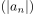
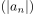
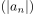

Konvergenz einer Folge im Komplexen und konvergenz des Betrags
1. Satz
Sei  eine konvergente Folge in
eine konvergente Folge in  Dann konvergiert auch 
Dann konvergiert auch 
2. Beweis
Aufgrund der Dreiecksungleichung folgt
 1
1
Sei eine konvergente Folge in
Dann konvergiert auch 
Aufgrund der Dreiecksungleichung folgt
1